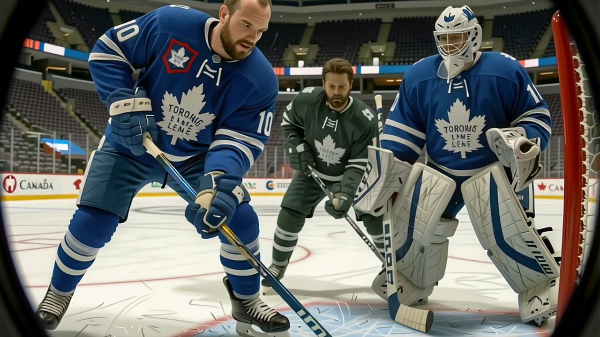

Gaborik sits at 97 on the Book, and nobody on this roster is within nine
The Bureau has him six spots above his base after the coach moved him to the second line. The move worked.
 Sam OkaforLeafs beat reporter · Queen City Telegram
Sam OkaforLeafs beat reporter · Queen City Telegram
The League Scouting Bureau's current Book puts  Marian Gaborik97 at 97 overall, six above his base grade of 91. That is the highest rating on the
Marian Gaborik97 at 97 overall, six above his base grade of 91. That is the highest rating on the  Toronto Maple Leafs roster.
Toronto Maple Leafs roster.  Mats Sundin88 is the next one up at 88.
Mats Sundin88 is the next one up at 88.
Gaborik has 32 goals and 51 points in 34 games at 19.3 minutes a night. He is the only Toronto player whose form is +6 on the Development Index.  Rostislav Klesla83 is next at +5, with 20 points from the blue line.
Rostislav Klesla83 is next at +5, with 20 points from the blue line.  Rick Nash82 also sits at +5, carrying 30 points in 34 games at 20 years old.
Rick Nash82 also sits at +5, carrying 30 points in 34 games at 20 years old.
The coach moved Gaborik to the second line around the  New York Rangers game on 2004-12-14. The slot data confirms it: Gaborik is listed L2RW and P1RW.
New York Rangers game on 2004-12-14. The slot data confirms it: Gaborik is listed L2RW and P1RW.  Alexander Mogilny87 handles L1RW. Sundin stays at L1C. The top power play has Sundin,
Alexander Mogilny87 handles L1RW. Sundin stays at L1C. The top power play has Sundin,  Gary Roberts87 and Gaborik together, and that unit has been good enough to make everything else on the ice look like a supporting act.
Gary Roberts87 and Gaborik together, and that unit has been good enough to make everything else on the ice look like a supporting act.
The Bureau's form term is not telling anyone anything new. Gaborik generates his own chances at a pace the Index grades as the best in this league on any night.
"You know, the game is slower for me now," Gaborik told The Tunnel's Marcus Bell after the 4-2 win over  Florida Panthers on 2004-12-18. "This year, first shift, I am there. My legs, they are there. And the coach, he give me shorter shifts, so every one I go hard."
Florida Panthers on 2004-12-18. "This year, first shift, I am there. My legs, they are there. And the coach, he give me shorter shifts, so every one I go hard."
At 19.3 minutes a night, Gaborik is not the most-used forward on this team. Roberts gets 17.7. Sundin gets 17.8. But the minutes Gaborik does get, he turns into goals.
His contract has 1 year left at $1.10M. The Bureau's potential grade sits at 90, below his current 97, which the Index reads as a player performing above his long-term ceiling. The gap matters more than either number alone. The question for the front office, whenever they get to it, is whether they pay for the 97 they have or the 91 they might regress to. At 22, with 32 goals in 34 games and a +6 on the Index, the safe bet is the 97.